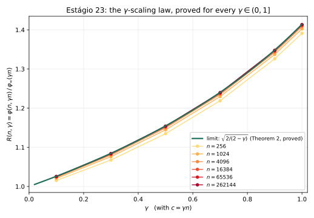
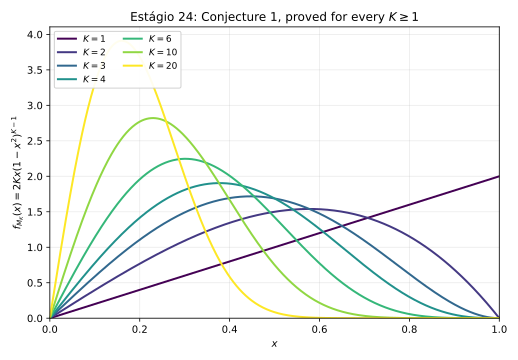

1. Introdução
Arquivos de pesquisa de longa duração acumulam alegações quantitativas de força epistêmica muito desigual: derivações, ajustes, coincidências numéricas, saídas de simulação e conjecturas convivem lado a lado. O arquivo Tamesis — um programa independente com mais de 280 registros auditados — enfrentou esse problema da forma mais direta possível: submetendo as próprias alegações a um laboratório de adjudicação (o Discovery Lab) desenhado para fechá-las contra dados externos reais, com regras que tornam o resultado negativo tão publicável quanto o positivo.
Este artigo sintetiza o desfecho completo desse programa até agosto de 2026. Ele tem duas contribuições. A primeira é metodológica: um protocolo executável de adjudicação — pré-registro de critérios antes de qualquer cálculo, proveniência obrigatória de valores de referência (nenhum número digitado de memória), validação sintética antes de dado real, e reprodução adversarial independente para todo achado positivo — que, aplicado com agentes computacionais autônomos, fechou mais de trinta alegações em ciclos de horas, não meses. A segunda é um resultado matemático: a função-limite exata da classe de universalidade U1/2, derivada (não ajustada), com verificação adversarial em quatro superfícies independentes.
2. Metodologia
O laboratório opera sob uma máquina de estados explícita
(CANDIDATE_FORMULATING → … → CLOSED_*), na qual estados terminais negativos
(CLOSED_NULL, CLOSED_INCONCLUSIVE) são catalogados com o mesmo peso
que replicações positivas. Cinco regras foram invariantes em todos os testes aqui relatados:
(i) Critérios antes do cálculo. Cada frente fixa, em nota de metodologia commitada antes de qualquer comparação com dados reais, o que contará como "consistente", "reproduzido" ou "refutado". Correções posteriores são limitadas a um adendo datado e delimitado. (ii) Proveniência total. Valores de referência (PDG, CODATA, Planck) são obtidos por consulta direta à fonte, com URL, data e valor citados; fonte inacessível é reportada como inacessível, nunca substituída de memória. (iii) Validação sintética primeiro. Nenhuma pipeline toca dado real sem antes recuperar um caso com resposta conhecida; quatro dos dezesseis candidatos da linha de invariantes fecharam nessa etapa, sem jamais tocar dado real. (iv) Reprodução adversarial obrigatória. Todo achado positivo é atacado por um agente independente, com implementação própria escrita antes de ler o código original, semente própria e, quando possível, rota matemática distinta. (v) Nenhuma reformulação pós-resultado. Hipóteses e critérios não mudam depois de vistos os dados reais; apenas bugs de implementação demonstrados podem ser corrigidos, com registro.
3. Resultados negativos: o funil de sobrevivência

CLOSED_NULL com
16/16 candidatos sem sobrevivente; as quatro tentativas cosmológicas (SPARC/MOND, binárias
largas do Gaia) fecharam inconclusivas após demonstração de confundidores reais; a
adjudicação numérica do núcleo refutou seis de sete alegações. Os sobreviventes: dois
achados replicados sobre zeros de ζ e a função-limite U1/2 (Seção 5).3.1. Invariantes cross-domain: 16/16 nulos
A linha mais longa do programa testou se existe um par (mapa de coarse-graining, observável $I(X)$), definido uma única vez, capaz de detectar transições de regime documentadas em domínios reais genuinamente distintos (sismologia, EEG, ECG, mercados, geomagnetismo, vulcanologia, hidrologia, epidemiologia). Dezesseis candidatos ao longo de cinco rodadas — de critical slowing down e DFA a entropia de transferência e complexidade de ε-máquinas (CSSR completo) — produziram zero invariantes sobreviventes. Quatro achados brutos com $p<0{,}05$ foram refutados pela reprodução adversarial, que em todos os casos encontrou uma explicação mundana concreta: um nulo ETAS subcrítico, falha de generalização entre sujeitos, um terremoto M6,9 dominando a decomposição espectral e um artefato instrumental de baixa frequência eliminado por um filtro passa-alta padrão. A análise retrospectiva revelou que os candidatos colapsam em apenas ~4 eixos matemáticos latentes — persistência/taxa de entropia, taxa de relaxação local, densidade de recorrência via embedding e estatística de cauda — sugerindo que o espaço das estatísticas não-lineares "óbvias" foi efetivamente coberto.
3.2. Cosmologia: quatro fechamentos inconclusivos e duas fabricações detectadas
A auditoria descobriu que os dois resultados cosmológicos de manchete do arquivo legado
("EFE CONFIRMED, $p<10^{-6}$" e "MOND DETECTED" em binárias do Gaia) repousavam sobre dados
fabricados — curvas de rotação digitadas à mão para galáxias inexistentes no catálogo SPARC real
e uma lista de binárias com source_id sequenciais artificiais. Refeitos com dados
reais (SPARC 175 galáxias; El-Badry et al. 2021, 43.147 sistemas pós-corte) sob pré-registro,
os quatro testes fecharam inconclusivos por razões estruturais demonstradas — diluição por
projeção e multiplicidade oculta não resolvida, esta última suficiente sozinha para explicar
todo o sinal residual. Nenhum veredito foi aceito contra as salvaguardas pré-registradas.
3.3. Adjudicação dos ajustes de constantes

$\sin^2\theta_W = 3/13$, marcado "CONFIRMED, 0,19%" no arquivo, está a 7,5σ da referência PDG no esquema $\overline{\mathrm{MS}}$ — o mais favorável — e o código-fonte contém o valor-alvo hardcoded, configurando ajuste, não previsão. $\alpha^{-1} = \Omega^{1.03}$ é um ajuste de um parâmetro contínuo a um único número (zero graus de liberdade), e sua própria aritmética interna não fecha ($\Omega^{1.033}=136{,}956$). A densidade de energia escura "holográfica" reproduz, por identidade algébrica, a densidade crítica — a razão alegada de 1,46 é exatamente $1/\Omega_\Lambda$. A lei de massas de quarks por comprimento de corda de nós ideais falha na validação leave-one-out (5/6 quarks, erros de até 52×) e fica no percentil 86/70 de um nulo de permutação sobre atribuições alternativas de nós.
3.4. Quatro linhas novas: cognição, geofísica e lógica formal (27 de agosto de 2026)
Um levantamento adicional, sob a mesma disciplina de pré-registro e reprodução adversarial da Seção 2, aplicou-se a alegações fora do núcleo numérico — filosofia da mente, ciência cognitiva, geofísica e lógica formal — e fechou quatro linhas novas.
Ressonância Schumann (DISC-SCHUMANN-RESONANCE-001). Testada contra dado real
de magnetômetro ELF da estação de Sierra Nevada (conjunto de dados Zenodo), 3 dias × 2 canais,
6/6 casos. Resultado: NÃO DISTINGUE — existe, em todos os casos, uma corcova
espectral larga genuína na posição esperada (7,8–8,0 Hz), mas sua proeminência (1,22×–1,44×)
fica abaixo do limiar de 3× pré-registrado. Reprodução adversarial bit-a-bit confirmou os
números; nenhuma alegação de conexão neural foi feita ou é possível a partir deste resultado.
Reprodutibilidade de IIT/Φ (DISC-IIT-PHI-REPRO-001). Reprodução, via o
pacote PyPhi, da rede canônica de 3 nós ABC de Oizumi, Albantakis & Tononi (2014), Figura 4.
Resultado: CONFIRMED — Φ=1,916666 computado contra 1,916665 publicado, reproduzido
bit-a-bit até 16 dígitos significativos em duas instalações totalmente independentes (frente +
referee adversarial). Trata-se de uma checagem de reprodutibilidade de uma métrica computacional
definida, não de um teste de qualquer alegação sobre consciência.
Princípio da Energia Livre — levantamento de alvo falsificável
(DISC-FEP-PREDICTIVE-CODING-001). Levantamento de literatura em Fase 0 examinou
quatro candidatos até profundidade de fonte primária. Resultado:
CLOSED_OUT_OF_DOMAIN — nenhum candidato satisfez as três exigências simultâneas
(uma previsão numérica fechada a priori, um modelo concorrente externo genuinamente nomeado, e
um conjunto de dados já público). Um dos artigos revisados concede, no próprio texto, que o
Princípio da Energia Livre "pode, defensavelmente, descrever qualquer dado biológico observado".
Lógica não clássica em Lean4 — Lógica do Paradoxo (LP) de Priest. Uma linha formal, não
empírica: 6 arquivos Lean4, 876 linhas, 12 meta-teoremas verificados por máquina,
lake build limpo, zero sorry. Explosão (ex falso quodlibet), modus
ponens e o silogismo disjuntivo são todos provados inválidos sob o condicional material de
LP — o resultado central da paraconsistência — enquanto um teorema de "colapso" de recaptura
clássica é provado como um iff genuíno de duas vias sob valorações exclusivamente
booleanas. Revisada adversarialmente; uma correção apenas de documentação foi aplicada a uma
docstring que fazia uma alegação sem suporte (os teoremas provados em si não foram afetados).
Estas quatro linhas abrem um programa companheiro ("Camadas de Realidade, Consciência e os
Limites da Lógica") que aplica a mesma disciplina de pré-registro e reprodução adversarial a
alegações de filosofia da mente, ciência cognitiva, geofísica e lógica formal — ver
PROGRAMA_CONSCIENCIA_LOGICA_E_REALIDADE.md
para o mapeamento item a item completo, incluindo o que foi deliberadamente excluído por
não-falseabilidade (panpsiquismo como fato literal, "Deus como equilíbrio termodinâmico", o
Argumento da Simulação como proposição testável, e outros).
4. Resultados positivos replicados sobre zeros de ζ
A única linha continuamente aberta produziu dois números replicados sobre os zeros reais de Riemann (tabelas de Odlyzko, três regimes de altura até #10²¹): (i) sequências de gaps grandes consecutivos são menos comuns que sob reordenação aleatória — sinal na direção oposta à hipótese original, reportado como tal e aprovado no gate de replicação em altura independente; (ii) o gap mínimo normalizado entre $N$ zeros escala como $N^{-1/3}$ ($\hat\beta = -0{,}3395$, IC95% $[-0{,}387; -0{,}287]$), consistente com GUE e excluindo Poisson ($N^{-1}$) e GOE ($N^{-1/2}$) — confirmação numérica de universalidade já conhecida, catalogada sem alegação de novidade. Um terceiro teste (máximos de $\log|\zeta|$ em intervalos curtos, discriminando a correção $-\tfrac{3}{4}\log\log\log T$ de Fujii–Harper–Keating do $-\tfrac{1}{4}$ do modelo iid) está pré-registrado e em execução; nenhum resultado é reportado aqui. Nenhuma dessas análises constitui progresso sobre a Hipótese de Riemann, e nenhuma alegação nesse sentido é feita.
5. O resultado principal: a função-limite exata da classe U1/2
A única alegação do núcleo que sobreviveu parcialmente à adjudicação foi a classe de universalidade U1/2: tome uma permutação uniforme de $[n]$ e redirecione cada ponto, independentemente, com probabilidade $c/n$, para um destino uniforme; seja $\varphi(n,c)$ a fração esperada de pontos em ciclos do grafo funcional resultante. O arquivo alegava, como "teorema", $\varphi_\infty(c) = (1+c)^{-1/2}$. A reprodução adversarial confirmou o expoente de cauda $1/2$ e a distinção decisiva frente às classes concorrentes ($\Delta\mathrm{AIC} > 2600$), mas refutou a forma exata: os desvios são sistemáticos e estáveis até $n = 64.000$.
A caracterização subsequente derivou a forma correta. Explorando a órbita de um ponto típico no objeto-limite (estrutura de ciclos Poisson–Dirichlet(1) da permutação, redirecionamentos como processo de Poisson de intensidade $c$), a probabilidade de sobrevivência cíclica condicional à massa percorrida $t$ fatoriza como $(1-t)e^{-ct^2}$ — um cancelamento exato no funcional gerador de Poisson é o que torna a forma fechada possível — dando, com zero parâmetros livres:
$$\varphi_\infty(c) \;=\; \int_0^1 e^{-ct^2}\,dt \;=\; \frac{1}{2}\sqrt{\frac{\pi}{c}}\, \operatorname{erf}(\sqrt{c}),$$
com série inteira $\sum_k \frac{(-c)^k}{k!(2k+1)} = 1 - \tfrac{c}{3} + \tfrac{c^2}{10} - \dots$ e cauda $\tfrac{\sqrt{\pi}}{2}c^{-1/2}$. O primeiro coeficiente já decide a questão analiticamente: $a_1 = 1/3$, enquanto a forma original exigiria $1/2$. Condicionada a $K$ redirecionamentos sobreviventes, a fração cíclica tem média $4^K (K!)^2/(2K+1)!$ — as integrais de Wallis — e lei $2Kx(1-x^2)^{K-1}$, que identificamos como exatamente o caso de parâmetro fixo do modelo de "permutações corrompidas" de Hansen & Jaworski [4]; nosso resultado é a sua mistura de Poisson, cuja forma fechada erf não encontramos publicada (busca não exaustiva).


A verificação adversarial atacou o resultado em quatro superfícies independentes, com números travados antes de ler a derivação original: enumeração exata em $n$ finito (validada contra enumeração tripla de força bruta, diferença $< 3\times10^{-16}$), Monte Carlo em valores de $c$ nunca usados, re-derivação analítica cega — que reproduziu a mesma fórmula por rota própria — e a lei condicional de Wallis. Veredito: confirmado nas quatro; a citação de Hansen–Jaworski foi verificada no PDF original. Permanecem como limitações honestas: a passagem $n$ finito $\to$ contínuo está controlada empiricamente (até $n = 65.536$), não formalizada [ver §5.1 abaixo — item fechado em 23/08/2026]; e a lei distribucional completa para $K \geq 2$ segue conjectura, ainda que agora com suporte KS adicional [ver §5.2 abaixo — instâncias $K=2$ e $K=3$ provadas (módulo uma citação clássica) em 23–24/08/2026; §5.3 — $K=4$ provado em 25/08/2026; e §5.4 — provada para todo $K\ge1$ de uma vez em 26/08/2026, com a Conjectura 2 seguindo como corolário].
5.1. Extensão pós-publicação (23 de agosto de 2026): forma fechada em todas as ordens e convergência uniforme
Duas frentes subsequentes, sob a mesma disciplina de pré-registro e reprodução adversarial obrigatória da Seção 2, fecharam os dois itens mais difíceis deixados em aberto acima.
Forma fechada em todas as ordens. Estendendo a mesma técnica de casamento assintótico que produzira os termos de erro de ordem $1$, $1/n$ e $1/n^2$ a um índice de ordem simbólico, obtém-se uma expressão fechada — não mais uma sequência infinita de correções — para a recursão discreta subjacente, válida em toda ordem, todo $K$, todo $b$ e todo $n$ finito. Os coeficientes resultantes revelaram-se, antes de qualquer ajuste, exatamente os números de Stirling de primeira espécie sem sinal; como estes são os coeficientes de um fatorial ascendente, a série infinita re-soma-se de forma exata e finita (termina após $K+1$ termos). Uma prova elementar independente, sem a maquinaria de casamento assintótico, confirma o mesmo resultado. A reprodução adversarial — 215.070 checagens exatas contra um simulador construído do zero a partir das regras originais, zero divergências — confirmou a afirmação central, encontrou um erro real numa alegação negativa secundária (corrigido por adendo datado) e promoveu duas caracterizações antes apenas numéricas a demonstrações.
Convergência uniforme. O Teorema 3 acima estabelece $\varphi(n,c)\to\varphi_\infty(c)$ apenas para cada $c$ fixo, um de cada vez; a passagem contínua não estava formalizada. Uma frente dedicada provou, incondicionalmente e a partir de apenas dois lemas elementares — um acoplamento Lipschitz uniforme em $n$, e um limitante de cauda uniforme em $n$ — que essa convergência é uniforme não só em intervalos compactos $[0,C]$, mas em todo o domínio $[0,\infty)$, mais forte do que fora pedido. Um perfil de erro de primeira ordem em forma fechada, $$e(c)=\tfrac12\int_0^1\frac{1-(1+ct^2+c^2t^4)e^{-ct^2}}{t^2}\,dt,\qquad e(c)\sim\tfrac{\sqrt{\pi c}}{8}\ (c\text{ grande}),$$ foi derivado como subproduto; sua versão uniforme (em oposição a coeficiente-a-coeficiente) permanece condicional a uma única hipótese de regularidade nomeada e não provada. A reprodução adversarial atacou os dois teoremas incondicionais e os dois lemas que os sustentam com peso máximo — auditando cada etapa do limitante de cauda separadamente — e não encontrou erro em nenhum deles; sua única descoberta substantiva foi que o documento original nomeava incorretamente qual lacuna específica mantinha condicional um resultado secundário, corrigido por adendo datado sem afetar os teoremas incondicionais.

Nenhuma das duas extensões altera o Teorema 3 ou a classificação da classe U$_{1/2}$ — ambas
dependem de $n\to\infty$, preservado exatamente. A limitação honesta remanescente mudou de
natureza: já não é a ausência de uma prova de convergência, mas a ausência de uma taxa explícita e
uniforme-em-$K$, condicional a uma única hipótese nomeada [ver §5.2 abaixo — hipótese provada e
taxa explícita incondicional obtida em 23/08/2026]. Fontes completas, ledgers de decisão e
os dois relatórios adversariais independentes: THEOREM.md, "Estágio 9" e "Estágio
10", em 05_DISCOVERY_LAB/02_TESTS/CORE_NUMERICS/u12_universality/theorem/.
5.2. Extensões subsequentes (23–24 de agosto de 2026): taxa explícita incondicional, a constante nítida no limite, formas fechadas gerais e a lei condicional em $K=1,2,3$
Sete estágios adicionais (THEOREM.md, "Estágio 11" a "Estágio 17"), sob a mesma
disciplina da Seção 2 — culminando, em cada caso, num referee hostil dedicado com implementação
independente (e, nos Estágios 15 e 17, verificação prévia adicional da própria sessão
orquestradora antes do despacho) — fecharam, em quatro linhas de trabalho:
Taxa explícita e incondicional (Estágios 11–12). O crescimento geométrico qualitativo de $M_K$ foi provado por rota alternativa via a forma fechada em todas as ordens — fechando a hipótese de regularidade que mantinha condicional o perfil de erro uniforme da Seção 5.1 — e em seguida a hipótese distinta e mais forte por trás de uma taxa explícita — (U′), $|\varphi_n^{(K)}-\varphi_K| \le a\sqrt{K}/n$ uniforme em $0\le K\le n$ — foi provada, com constante explícita não-nítida $a = 1+\sqrt{\pi/2} \approx 2{,}2533$, dando a taxa incondicional, para $n\ge4$ e $0\le c\le n$: $$\bigl|\varphi(n,c)-\varphi_\infty(c)\bigr| \;\le\; \frac{(1+\sqrt{\pi/2})\sqrt{c} + 0{,}2805}{n}.$$ O referee re-derivou tudo do zero das fontes primárias, construiu um motor de Markov independente e checou a desigualdade final com zero violações até $K=10^5$.
A constante nítida no limite (Estágio 13). Um limitante inferior elementar para a função $Q$ de Ramanujan, $Q(n) \ge \sqrt{\pi n/2} - 6$, elevou o limitante superior implícito da prova anterior a um limite exato: $\lim_{K\to\infty} M_K/\sqrt{K} = a^* = \sqrt{\pi}(1/\sqrt{2}-1/2) = 0{,}3670872\ldots$ — a primeira confirmação rigorosa de que a constante nítida numericamente conjecturada é o valor assintótico correto. O supremo $\sup_K M_K/\sqrt{K} = a^*$ (equivalente a monotonicidade) permanece aberto: duas rotas foram tentadas e falharam, ambas documentadas com o contraexemplo ou a obstrução exata que as matou [ver §5.3 abaixo — supremo provado na terceira tentativa em 25/08/2026].

05_DISCOVERY_LAB/assets/make_assets.py.Formas fechadas gerais para as constantes de erro (Estágios 14 e 16). A forma fechada geral-$b$ das constantes agudas $D^{*(p)}_r(b)$, deixada aberta pelo Estágio 9, foi provada primeiro para $p=1,\ldots,4$ (165.888 checagens exatas do referee, zero divergências) e depois estendida a $p=1,\ldots,10$ — $Q_p(u)$ via identidades de Newton e momentos centrais via função geradora de cumulantes, ambos algoritmos gerais em $p$, não ajustados caso a caso; 26.710 checagens exatas da frente mais 18.653 do referee por métodos deliberadamente diferentes (interpolação de Lagrange), zero divergências em ambas. O referee foi além do mandato e construiu uma prova indutiva de que a máquina $H_k(r,b)$ subjacente é correta para todo $k$ — de modo que $p>10$ permanece aberto apenas por custo computacional de execução simbólica, não por incerteza matemática residual [ver §5.3 abaixo — executado e verificado até $p=20$ em 25/08/2026].
A lei distribucional condicional, agora provada em $K=1,2,3$ (Estágios 15 e 17). A última limitação nomeada na Seção 5 — a lei $f_{M_K}(x) = 2Kx(1-x^2)^{K-1}$ conjectural para todo $K\ge2$ — foi fechada em suas duas primeiras instâncias: $f_{M_2}(x)=4x(1-x^2)$ (onda 14) e, ao contrário da expectativa explícita de não-fechamento por explosão combinatória registrada no próprio despacho, $f_{M_3}(x)=6x(1-x^2)^2$ (onda 15). O mecanismo que impediu a explosão: nós fora-de-ciclo do grafo de redirecionamentos contribuem massa cíclica nova exatamente zero, independentemente do alvo, colapsando as $4^K$ configurações brutas de destino ao número (bem menor) de estruturas de ciclo em $K$ itens rotulados — $64 \to 7$ formas em $K=3$. Cada instância é provada módulo a mesma citação clássica de amostragem size-biased/residual de Poisson–Dirichlet(1) já usada pelo caso base $K=1$, e cada uma passou por referee hostil dedicado (para $K=3$, briefado explicitamente para caçar a falha que explicaria a surpresa: re-derivação completa das 7 formas, $8\times10^6$ amostras de Monte Carlo independente, 26.000 testes de mecanismo discreto, zero erros matemáticos encontrados). $K\ge4$ permanece aberto e explicitamente não tentado; a mistura de Poisson completa (a "Conjectura 2" do arquivo) permanece conjectura [ver §5.3 abaixo — $K=4$ provado em 25/08/2026, segunda surpresa consecutiva; e §5.4 — a rota candidata para $K\ge5$ funcionou: provada para todo $K\ge1$ em 26/08/2026; a Conjectura 2 está agora provada como corolário indireto (a rota direta permanece exatamente como encerrada, em não-fechamento honesto)].

THEOREM.md), $K=2$
(Estágio 15) e $K=3$ (Estágio 17, fechamento inesperado). [Atualização 25/08/2026: a figura
foi regenerada incluindo a quarta instância, $K=4$ (Estágio 20) — ver §5.3 desta página.]
Curvas traçadas diretamente das formas fechadas provadas, sem simulação nem ajuste. Gerada
por 05_DISCOVERY_LAB/assets/make_assets.py.
Os itens abertos nomeados ao fim do Estágio 17 — alvo, neste momento, de uma sexta onda
de cinco frentes paralelas cujos resultados não são reportados aqui: Conjectura 1 para $K\ge4$;
a Conjectura 2 em geral; $\sup_K M_K/\sqrt{K} = a^*$; $D^{*(p)}_r(b)$ para $p>10$ (barreira
puramente computacional); e a forma fechada completa do piso de ciclos longos do modelo M-CLUST
em $b=1$ (linha separada, parcialmente fechada). Adicionalmente, a lei de escala
$\gamma\in(0,1)$ (caracterizada, não provada — Estágios 10–13) permanece aberta e não é alvo
desta onda. Fontes completas: THEOREM.md,
Estágios 11–17, e os relatórios adversarial/REFEREE_REPORT.md de cada frente, em
05_DISCOVERY_LAB/02_TESTS/CORE_NUMERICS/u12_universality/theorem/.
[Atualização 25/08/2026: quatro das cinco frentes dessa onda fecharam e estão reportadas na
§5.3 abaixo; a quinta (piso M-CLUST) permanece sob verificação adversarial.]
5.3. Extensões subsequentes (25 de agosto de 2026): o supremo da constante nítida provado, $K=4$, $p\le20$ e um não-fechamento honesto
Quatro estágios adicionais (THEOREM.md, "Estágio 18" a "Estágio 21") — cada um com
referee hostil dedicado de implementação independente, e verificação prévia da própria sessão
orquestradora antes de cada despacho — fecharam quatro das cinco frentes da onda anunciada ao
fim da Seção 5.2:
O supremo da constante nítida, provado (Estágio 19). Na terceira tentativa — as duas
rotas anteriores falharam e estão documentadas com suas obstruções exatas — provou-se
$M_K < a^*\sqrt{K}$ estritamente para todo $K\ge1$, logo
$\sup_K M_K/\sqrt{K} = \lim_{K\to\infty} M_K/\sqrt{K} = a^*$: o supremo deixado aberto na Seção
5.2 está fechado. A rota combina o limitante inferior de Robbins (1955) para $n!$, o Teorema 7
de Flajolet–Grabner–Kirschenhofer–Prodinger (1995) — enquadramento de dois lados de $\theta(n)$
na expansão da função $Q$ de Ramanujan, confirmado pelo referee contra o PDF primário do artigo
— e uma identidade clássica exata para $Q(n)$; do outro lado, o limitante $z_K$ já provado no
Estágio 12 bastou sem modificação. A hipótese (U′) fica com a constante nítida
$a^*\approx0{,}3671$ em todos os casos $0\le K\le n$ — o caso de contorno $K=n$, não
tentado pela frente, foi fechado pelo próprio referee e re-verificado independentemente pela
sessão (aritmética racional certificada, zero violações). A taxa explícita nítida em $c$
(re-montar o Estágio 12 com $a^*$ no lugar de $a\approx2{,}2533$) é mecânica, mas honestamente
catalogada como não executada. [Atualização, mais tarde em 25/08/2026: executada e fechada pela
onda seguinte — Teorema R: $|\varphi(n,c)-\varphi_\infty(c)| \le [a^*\sqrt{c}+0{,}2805]/n$,
estrito em $(0,n]$, constante aditiva inalterada e certificada em racional puro, bound
assintoticamente justo na linha $c=n$; verificado adversarialmente ("Estágio 22" de
THEOREM.md).] Referee: SOUND WITH NAMED ISSUES — dois erratas de exibição,
nenhum afetando teoremas, um deles encontrado independentemente pela verificação prévia da
sessão antes do despacho; corrigidos por adendos datados.
A lei condicional em $K=4$ (Estágio 20). Segunda surpresa consecutiva contra o diagnóstico de explosão combinatória: $f_{M_4}(x) = 8x(1-x^2)^3$, módulo a mesma citação clássica das instâncias anteriores. Os $\mathrm{Bell}(4)=15$ padrões de coincidência de destinos colapsam em apenas 5 formas cujos pesos $\prod_j(b_j-1)!$ somam exatamente $K!=24$ — uma bijeção partição↔permutação — e a expansão bruta de $5^4=625$ termos reduz-se a 12 tipos de forma; o cancelamento fora-de-ciclo segue da identidade de florestas ponderadas $E(E+Q)^{n-1}=E$, agora nomeada como rota candidata para $K\ge5$ (aberto, não tentado). Referee: SOUND, dois achados cosméticos, zero erros matemáticos.
$D^{*(p)}_r(b)$ executado e verificado até $p=20$ (Estágio 21). A barreira puramente computacional da Seção 5.2 foi empurrada: montagem e verificação para $p=11,\ldots,20$, todo $b\ge0$, com 75.899 checagens uniformes do referee em $r\le200$, $b\le30$, zero divergências. Bônus analítico do referee: o limite de grau $\deg_r H_{2k-1}=k-1$, antes apenas observado, foi provado (coeficiente líder $4^{k-1}(k-1)!$). $p>20$ permanece aberto apenas por não executado.
Não-fechamento honesto da rota direta da Conjectura 2 (Estágio 18). A frente de maior risco da onda terminou no desfecho pré-declarado como aceitável: a Conjectura 2 permanece conjectura. O progresso parcial é estrutural e provado: a arquitetura do método dos momentos (correta-se-completada); os alvos $E[M(c)^2]=(1-e^{-c})/c$ e $E[M_K^2]=1/(K+1)$ sobre a lei conjecturada (com âncoras incondicionais nas instâncias já provadas); a redução por blocos do caso $p=2$; o certificado de bloco intacto; e a refutação rigorosa, por contraexemplo exato em $n=6$, do atalho de Poissonização em $c$ (um reroute adicional pode aumentar a massa cíclica, 3 → 5). A obstrução genuína — a exploração conjunta de dois pontos — está localizada com precisão e permanece aberta. Referee: SOUND WITH NAMED ISSUES, quatro achados menores, dois reparados pelo próprio referee.
A quinta frente da onda (a forma fechada completa do piso de ciclos longos do M-CLUST em $b=1$)
permanece sob verificação adversarial e nenhum resultado dela é reportado aqui. Dos itens
abertos nomeados ao fim do Estágio 17 restam, portanto: Conjectura 1 para $K\ge5$ (com rota
candidata nomeada), a Conjectura 2 em geral (com a obstrução localizada), $p>20$, o piso
M-CLUST, e a taxa nítida em $c$ (mecânica, não executada) — além da lei de escala
$\gamma\in(0,1)$, que não era alvo desta onda. Fontes completas: THEOREM.md,
Estágios 18–21, e os relatórios adversarial/REFEREE_REPORT.md de cada frente.
[Atualização — a taxa nítida em $c$ foi executada e fechada ainda em 25/08/2026 (Estágio 22,
ver acima); e, em 26/08/2026, a lei de escala $\gamma\in(0,1]$ foi provada (Estágio 23) e a
Conjectura 1 foi provada para todo $K\ge5$ de uma vez, com a Conjectura 2 seguindo como
corolário (Estágio 24) — ver §5.4 abaixo.]
[Atualização, mais tarde em 25/08/2026 — a quinta frente fechou; onda completa, 5/5
integradas.] A frente do piso M-CLUST (linha separada da Árvore B do mapa de dependências,
não um Estágio de THEOREM.md) retornou como fechamento parcial fortalecido
do sistema acoplado $(\Phi,\Psi)$ do piso em $b=1$ — e como o caso mais claro do programa de uma
correção adversarial em underselling: o referee hostil replicou do zero todas as
alegações positivas (Monte Carlo a $10^6$ caminhantes, um solver de EDP independente de outra
família de discretização, e uma série exata a ordem 500) e refutou as duas limitações de
escopo que a própria frente havia declarado. Todos os coeficientes da série small-$t_0$
têm forma fechada exata (família $P(s)+Q(s)\,\mathrm{erfcx}(s\sqrt{c/2})$, indução construtiva
— nenhuma camada de quadratura), e o "raio de convergência" medido era erro de truncamento a 3
termos: a série com coeficientes exatos converge em todo o platô e dá a caracterização mais
nítida da linhagem, $\Phi(0,t_0)=0{,}0377616$ para todo $t_0\ge0{,}02$. A sessão orquestradora
verificou independentemente os dois resultados do referee antes de catalogar. O que resta
aberto: a ressomação em forma fechada (a constante do platô não foi identificada como constante
nomeada) e o gap abstrato-vs-real ~30%, honestamente fora de escopo. Nenhuma fórmula de registro
muda.
5.4. Onda 17 (25–26 de agosto de 2026): a lei de escala $\gamma$ provada, a Conjectura 1 fechada para todo $K$ com a Conjectura 2 como corolário, e um novo teorema sobre a lei conjunta de dois pontos
Fechada a onda 16 (5/5), uma nova onda de cinco frentes paralelas atacou cada item aberto nomeado ao fim da Seção 5.3. Duas retornaram com fechamentos completos até aqui — as demais (exploração conjunta de dois pontos; ressomação da constante do platô do piso M-CLUST) seguem em revisão adversarial e não são reportadas nesta versão da página.
A lei de escala $\gamma$, provada para todo $\gamma\in(0,1]$ (Estágio 23). Desde a Seção 5.2, permanecia aberto se $\varphi(n,\gamma n)/\varphi_\infty(\gamma n) \to \sqrt{2/(2-\gamma)}$ para uma razão $\gamma=c/n$ fixa — distinto do limite a $c$ fixo já provado. A frente derivou, diretamente da Definição 1 e sem reutilizar a maquinaria dos Estágios 9/12/22 (diagnosticada e confirmada estruturalmente fraca demais para este limite de razão), uma nova fórmula soma-dupla exata em $n$ finito, provando o Teorema 2 completo — taxa $O_\gamma(n^{-1/4})$ — mais os dois alvos-bônus do despacho: uniformidade em compactos $[\gamma_0,1]$ e o limite $\gamma_n\to0$ com $\gamma_n n^{1/3}/\ln n\to\infty$.

O referee hostil re-derivou a fórmula à mão antes de escrever qualquer código, reconstruiu todo o motor numérico do zero (sem abrir nenhum script da frente) e confirmou a tabela impressa dígito a dígito. Um detalhe notável: tanto o referee quanto a sessão orquestradora, de forma independente, encontraram e corrigiram a mesma classe de bug — um underflow catastrófico em ponto flutuante numa recursão binomial iniciada pela cauda em vez da moda — cada um em seu próprio script de verificação, antes de confirmar o resultado final. Veredito: SOUND, "ACCEPT for catalogue", nenhum achado nomeado. O termo de segunda ordem $C(\gamma)$ é provado apenas em $\gamma=1$ e permanece conjecturado, honestamente rotulado como tal, para $\gamma\in(0,1)$.
A Conjectura 1 fechada para todo $K\ge1$ de uma vez, e a Conjectura 2 como corolário (Estágio 24). O mandato explícito da frente era apenas a instância $K=5$; o objetivo de estica declarado no despacho — um argumento uniforme em $K$ — foi alcançado. Todo ingrediente per-$K$ das instâncias $K=1,\ldots,4$ (Seções 5.2–5.3) foi generalizado para $K$ simbólico: o lema dos espaçamentos rotulados para todo tamanho de bloco, a cascata telescópica para todo padrão de partição via um único passo indutivo, a fórmula do mecanismo de destino sem divisão por casos e — a pista nomeada pelo Estágio 20 — a identidade geral de florestas ponderadas $E(E+Q)^{n-1}=E$, agora provada para todo $n$ via a bijeção de Prüfer. O resultado:
$$f_{M_K}(x) = 2Kx(1-x^2)^{K-1} \quad \text{PROVADO para todo } K\ge1,$$
condicional à mesma citação clássica única (propriedade $PD(1)$ de residual/size-biasing) já usada em $K=1,\ldots,4$, aplicada recursivamente até $K-1$ vezes por $K$ fixo.

Como corolário imediato — não parte do mandato original, mas sinalizado pela própria frente para decisão da sessão — a Conjectura 2 também está agora provada, no mesmo patamar: a mistura de Poisson já citada na Seção 5.1 dá $P(M(c)\le x)=1-e^{-cx^2}$ em três linhas, fechando $E[M(c)^2]=(1-e^{-c})/c$ e $E[M_K^2]=1/(K+1)$ incondicionalmente para todo $K$ — os dois alvos que o Estágio 18 (Seção 5.3) havia deixado condicionais apenas em $K\le3$. Esta é uma rota indireta; a rota direta da Conjectura 2 (arquitetura de momentos do Estágio 18) permanece exatamente como estava, obstrução não removida.
Dado o peso do resultado — o maior fechamento desta linha até aqui — a sessão despachou um referee reforçado, briefado explicitamente para atacar o passo de maior risco: a independência do resíduo na cascata telescópica, no salto de per-$K$ para $K$ geral. O referee reconstruiu tudo do zero sem abrir nenhum script da frente, provou a cascata telescópica simbolicamente para qualquer sequência de tamanhos de bloco de uma só vez (não apenas os padrões de $K=5$), verificou a identidade de Prüfer por força bruta até $n=7$, e — além do escopo mandatado — rodou uma verificação completa em $K=6$ (117.649 mapas brutos, Monte Carlo $N=800\text{k}$, $KS\ p=0{,}55$). Quatro bugs foram encontrados e corrigidos, todos no próprio código de verificação do referee, todos disclosurados; nenhum no documento-alvo. Veredito: SOUND, "ACCEPT for catalogue", nenhum achado novo além dos três já auto-disclosurados pela própria frente.
Um novo teorema sobre a lei conjunta de dois pontos (Estágio 25). Uma frente separada atacou a obstrução localizada pelo Estágio 18: a lei conjunta da exploração em dois pontos. Seus dois alvos numéricos já estavam fechados pela Conjectura 1 geral-$K$ acima, por uma rota não relacionada — sem tensão, já que a própria frente havia mostrado que não existe atalho de um split same/different-cycle para esses alvos. O que a frente provou é novo: o Teorema da Restrição Cíclica Uniforme — condicional ao conjunto de pontos que terminam em um ciclo (qualquer subconjunto $c$, $|c|\ge2$), a restrição de $f$ a $c$ é exatamente uniformemente distribuída sobre todas as $|c|!$ bijeções de $c$, para todo $n,K$ — com um corolário exato: dois pontos, dado que ambos sobrevivem como cíclicos, terminam no mesmo ciclo final exatamente metade das vezes. Um referee hostil re-derivou o teorema e seu lema mais arriscado à mão, atacando especificamente os pontos de maior risco nomeados no despacho, e rodou uma verificação exaustiva em 33 células $(n,K)$ (a frente: 21) — incluindo tipos de célula nunca testados pela frente — com zero violações, mais uma re-implementação totalmente independente batendo exatamente. Veredito: SOUND, "ACCEPT for catalogue", nenhum erro encontrado.
Onda 18 — três não-fechamentos honestos, cada um com progresso incondicional genuíno
(Estágios 26–28). Três frentes separadas atacaram, respectivamente, o termo de segunda
ordem $C(\gamma)$ da lei de escala (Estágio 23), a ponte distribucional $M_n(c)\to_d M(c)$
(aberta desde o Estágio 6) e a versão contínua-nativa do Teorema J (tentada no Estágio 25
§6.3). Nenhuma fechou seu mandato completo, mas cada uma isolou com precisão onde a
dificuldade remanescente vive — ver a nota de atualização acima para os enunciados. Em resumo:
o Lema E e o Lema D0 (forma fechada $D_0(\gamma)=(\gamma-1)/(2(2-\gamma))$, via soma de
Poisson/theta de Jacobi) são provados para $C(\gamma)$, mas a "metade difícil" continua apenas
heurística; $K=0,1$ da ponte distribucional está fechado incondicionalmente (Proposições D0,
D1, Lema R e Lema P2), com o primeiro resultado de segundo momento desta linhagem, mas
$K\ge2$ permanece aberto; e um novo teorema contínuo por transferência,
$P(\text{mesmo ciclo final}\mid K\text{ marcas})=1/(2(K+1))$, fecha $K=0,1$ sem resolver a
obstrução de construção direta, que permanece intocada para $K\ge2$. Todas as três frentes
foram aceitas por referee hostil dedicado (SOUND, "ACCEPT for catalogue"), com um único erro
de menor porte corrigido (expoente do termo de erro do Lema D0). Fontes: THEOREM.md,
Estágios 26–28, e os respectivos adversarial/REFEREE_REPORT.md.
Onda 19 — dois fechamentos, uma extensão, um diagnóstico afiado (Estágios 29–32). A
quarta frente da onda 18, integrada depois das três acima, estendeu a montagem geral-$p$ de
$D^{*(p)}_r(b)$ de $p=1,\ldots,20$ para $p=1,\ldots,40$ em escala completa
(r\le200,b\le30), sem nenhum ingrediente matemático novo — pura execução da
maquinaria já provada, com re-derivação do referee por rota deliberadamente diferente
(Stirling de segunda espécie em vez de Bernoulli/Faulhaber), 138.040 checagens exaustivas mais
400 aleatorizadas, zero divergências (Estágio 29). A onda 19 então fechou dois itens e
estendeu um terceiro. Na Lacuna 2 do termo $C(\gamma)$ (Estágio 30): $\tau(m)$ é um polinômio
cúbico exato em $m$, dando $\Delta\tau(k)$ em forma fechada exata — não um resto de Taylor —
válida em toda a faixa $1\le k\le n$, e a soma ponderada que de fato importa para $E(\gamma)$
é provada $O(n^{-1/2})\to0$ via um novo Lema G2 (corolário elementar, por diferenciação, da
identidade de soma de Poisson já provada por trás do Lema D0) — mais forte que o pedido;
$C(\gamma)$ para $\gamma\in(0,1)$ permanece aberto, com a Lacuna 1 agora, por eliminação, o
único obstáculo dominante nomeado. Na exploração conjunta de dois pontos (Estágio 31), nomeada
bloqueador em quatro integrações distintas (Estágios 18, 25, 27, 28): $K=2$ está agora
PROVADO — forma fechada exata $P_{nn}(n,2)=(10n^2+7n+2)/(30n^2)$, via dois novos
lemas (Estrutura de Lacunas de Pontos Marcados; Estrutura de Redirecionamento de Duas Fontes)
que generalizam o método de caso-split dos Estágios 25/27 de um ponto marcado para dois —
fechando o alvo de segundo momento $P_{nn}(n,K)\to1/(K+1)$ do Estágio 27 em $K=2$ e, via o
Corolário do Teorema J já provado, estendendo o teorema contínuo por transferência do Estágio
28 a $K=2$ ($\to1/6$) quase de graça; $K\ge3$ permanece aberto, agora com diagnóstico
estrutural preciso (um grafo funcional de redirecionamento nos arcos marcados, não apenas uma
tabela $3\times3$). E $D^{*(p)}_r(b)$ foi estendido de novo, a $p=1,\ldots,80$ em escala
completa, 261.274 checagens exatas, zero divergências — $p>80$ aberto apenas por
não-executado (Estágio 32). Separadamente, no resíduo do platô M-CLUST(b)
(PROOF_DEPENDENCY_MAP.md, nó PLATRESUM — mecanismo distinto da linha
principal desta página): uma quarta frente usou a constante abstrata do platô, agora exata,
para recaracterizar o gap abstrato-vs-real, antigo "~30%", em ~38,8% em média (faixa
35,8%–43,2%), aproximadamente constante ao longo da faixa de $t_0$ — diagnóstico
afiado, não fechamento, que também enfraquece (sem substituir) as duas hipóteses candidatas
nomeadas anteriormente — e fortaleceu numericamente os próximos dois coeficientes da lei
assintótica de quatro termos: $d_4\approx26{,}1246$ (vs. conjecturado $209/8=26{,}125$) e
$d_5\approx-82{,}017$ (vs. conjecturado $-(1546/15)\sqrt{2/\pi}\approx-82{,}235$), via um
método fresco de isolamento de resíduo alcançando $c=100$ a $c=655.360$. As quatro frentes
passaram por referee hostil dedicado (SOUND / SOUND WITH NAMED ISSUES, "ACCEPT for catalogue"
em todas); achados nomeados corrigidos por adendos datados, nenhum afetando número reportado.
Fontes: THEOREM.md, Estágios 29–32, e o adendo datado de
PROOF_DEPENDENCY_MAP.md sob PLATRESUM (DISC-DEC-083/
DISC-DEC-085).
Onda 20 — um fechamento completo, uma segunda prova inesperada, um fechamento parcial
adicional, um gap heurístico decomposto (Estágios 33–35). Quatro frentes atacaram o que a
onda 19 deixou aberto. Na Lacuna 1 de $C(\gamma)$ (Estágio 33) — objeto genuinamente
transcendental, ao contrário da Lacuna 2 sem forma fechada exata disponível: a frente entrega
um novo fato algébrico exato ($\delta(D)+\tau(M)/2$ é polinômio cúbico exato em
$D:=M-\gamma k$), um novo Lema Bulk/Tail rigoroso reduzindo a Lacuna 1 a limitar duas
quantidades escalares determinísticas via monotonicidade + a desigualdade de Hoeffding, e uma
assintótica de ordem dominante mostrando que o limitante resultante de fato se anula — ainda
não uma desigualdade totalmente explícita e uniforme em $\gamma\in(0,1)$ com um $n_0(\gamma)$
nomeado. $C(\gamma)$ para $\gamma\in(0,1)$ permanece aberto, mas a estratégia é agora concreta
e numericamente validada, não mais intocada. Na exploração conjunta: $K=3$, diagnosticado pela
frente anterior como estruturalmente muito mais duro (um grafo funcional, não uma tabela
plana), está agora PROVADO para os alvos escalares de segundo momento/mesmo ciclo —
forma fechada exata $P_{nn}(n,3)=(35n^3+38n^2+23n+6)/(140n^3)$ (Estágio 35), via dois
mecanismos novos (Reindexação por Fonte-Governante; Lema da Unicidade do
Predecessor-de-Ciclo) que respondem diretamente ao diagnóstico do Estágio 31 em vez de
contorná-lo. O padrão de transferência contínua $1/(2(K+1))$ está agora confirmado em
$K=0,1,2,3$; a CDF completa de $M_n^{(3)}$ e a lei conjunta geral-$K$ permanecem abertas. No
gap heurístico $H1$ do platô M-CLUST(b) (validade uniforme da decomposição assintótica casada
outer/inner, intocado pela frente da onda 19 acima): um novo Lema de Concentração de Watson
(rigoroso, elementar) reduz $H1$ a exatamente duas condições menores e verificáveis, $(U1)$
e $(U2)$, mais uma nova EDO exata para o perfil do platô e uma grade de uniformidade numérica
extensa mostrando a razão de aproximação convergindo a 1 monotonicamente — o oposto
qualitativo do que uma falha genuína de uniformidade produziria. $H1$ permanece aberto, agora
decomposto em vez de monolítico; $H2$ segue intocado. Por fim, uma quarta frente fechou por
completo a janela intermediária $n^\epsilon\le c_n\le n^{2/3}/\log n$ — nomeada como
resíduo aberto desde a onda 17, nunca atacada diretamente até agora — por combinação direta e
elementar de dois resultados já provados (Teorema R, Estágio 22; Corolário 4.2, Estágio 6),
sem nenhuma maquinaria nova, mais um bônus honesto: a mesma prova fortalece a metade
$\gamma_n\to0$ do Corolário 2, cuja hipótese de taxa mínima de crescimento deixa de ser
necessária (Estágio 34). As quatro frentes passaram por referee hostil dedicado (SOUND /
SOUND WITH NAMED ISSUES, "ACCEPT for catalogue" em todas); achados nomeados —
majoritariamente apresentacionais, mais um achado moderado sobre uma hipótese de
monotonicidade não declarada no Lema Bulk/Tail, que uma checagem mais profunda do referee não
encontrou falhar em nenhum caso testado — foram corrigidos por adendos datados. Fontes:
THEOREM.md, Estágios 33–35, e o adendo datado de
PROOF_DEPENDENCY_MAP.md sob PLATRESUM (DISC-DEC-088/
DISC-DEC-091).
Onda 21 — uma correção a uma constante viva do Estágio 33 (Estágio 36). Continuando a Lacuna 1, a frente relê a prova-fonte do próprio Estágio 33 e encontra uma correção real: a constante de truncagem é $\kappa_0(\gamma)=8/(\gamma(2-\gamma))$, uma função de $\gamma$, não a constante ilustrativa $2{,}25$ usada pelo Estágio 33 — logo $\lambda(\gamma)=4(3-2\gamma)/(\gamma(2-\gamma))$ é contínua mas NÃO LIMITADA em $(0,1)$ (diverge quando $\gamma\to0^+$), refutando a alegação de que $\lambda$ era limitada em $(0,1)$; a substituição corretamente escopada — uniforme em cada compacto $[\gamma_0,1)\subset(0,1)$, mas não no intervalo aberto inteiro — é provada rigorosamente. Separadamente, a frente constrói a desigualdade explícita $\forall n\ge n_0(\gamma)$ que o Estágio 33 deixara em aberto, fechando a lacuna lógica mas não a prática: $n_0(\gamma)$ sai astronomicamente grande ($\sim10^{21}$–$10^{85}$). Nenhum resultado numérico anterior é enfraquecido; $C(\gamma)$ para $\gamma\in(0,1)$ permanece inteiramente aberto. Referee hostil dedicado: SOUND WITH ONE NAMED ISSUE (baixa severidade) — ACCEPT for catalogue.
Frente remanescente da onda 21, mais onda 22 — uma cauda mais afiada, e o problema geral-$K$ fechado até $K=8$ (Estágios 37–39). No lado prático da Lacuna 1, uma desigualdade de Bernstein (sensível à variância, ao contrário de Hoeffding) reduz $n_0(\gamma)$ em até $\sim9$ ordens de magnitude em $\gamma=0{,}01$ — melhoria parcial genuína, não fechamento: $n_0(\gamma)$ permanece astronomicamente grande ($10^{18}$–$10^{76}$), e $C(\gamma)$ em si permanece aberto; um bônus genuíno faz um único $C$ $\gamma$-independente valer em todo $(0,1)$ aberto, não apenas em compactos (Estágio 37). Na lei conjunta geral-$K$: o método de caso-split é agora provado genuinamente $K$-livre em sua lógica — literalmente a mesma prova de $K=3$ com $3$ substituído por $K$ — fechando novas formas fechadas exatas em $K=4,5,6$ (Proposições NN4/NN5/NN6, ex. $P_{nn}(n,4)=(126n^4+187n^3+177n^2+98n+24)/(630n^4)$), cross-checadas contra brute force verdadeiro até 165M/84,7M configurações; $K\ge7$ não tentado por razão de orçamento (Estágio 38). Uma frente seguinte colapsa o integral duplo de $P_{\text{disjoint}}(s,s')$ a um único integral (bônus: $P_{\text{same}}\equiv P_{\text{disjoint}}$) e, via identidade de função-geratriz ordinária na soma de composição, produz um algoritmo geral-$K$ muito mais rápido, dando $P_{nn}(n,7)$ e $P_{nn}(n,8)$, cada um confirmado por duas rotas independentes; a obstrução ao fechamento simbólico-em-$K$ é relocalizada a uma soma finita sobre $r$ de tamanho $K$ e CERTIFICADA (algoritmo de Gosper, não heurística) como não admitindo forma fechada elementar ali, tanto para $K$ simbólico quanto em 13 valores concretos $K=3,\ldots,15$ (Estágio 39). Ambas as frentes: referee hostil dedicado, SOUND / SOUND WITH NAMED ISSUES — ACCEPT for catalogue; achados nomeados corrigidos por adendos datados. $K\ge9$ não tentado; nenhuma alegação sobre a existência ou não de uma fórmula fechada em $K$ além da classe Gosper-somável verificada aqui.
Onda 21, frente (b) redespachada — a CDF completa de $M_n^{(3)}$, fechada (Estágio
40). Redespachada do zero (K3-FULL-CDF-ATTEMPT, v2) após uma frente v1
anterior ter estagnado sem retorno verificável (material v1 preservado, não deletado, para
auditoria), esta frente fecha o item aberto desde o Estágio 27 — a CDF fechada completa de
$M_n^{(3)}$, no estilo da Proposição D1 de $K=1$ — e o excede. Um novo Teorema de Decomposição
Completa da Contagem de Ciclos fortalece o Lema 4/5 do Estágio 35 de uma afirmação par-a-par
para a lei conjunta completa da contagem de pontos cíclicos $T$ ($M_n^{(3)}=T/n$):
$T=O+\sum_{s\in S}V_s$, com $S\subseteq\{0,1,2\}$ o conjunto aleatório de fontes cíclicas e,
dado $S$, os $V_s$ mutuamente independentes e uniformes, governados por quatro fórmulas
fechadas novas (Proposição S). Disto segue a Proposição D3: uma única função racional
fechada, uniforme em $n$, para $P(M_n^{(3)}\le k/n)$ em todo $n\ge3$ e todo inteiro $k$,
provada por derivação simbólica completa em três regimes combinatórios, mais cinco corolários
— incluindo recuperação exata, com zero resto simbólico, da média finita-$n$ já provada
(Estágio 4) e limites de momento coincidindo com os valores contínuos já provados
($1/4$, $16/105$). Referee hostil dedicado (brute force até $n=9$, re-soma simbólica
independente das quatro fórmulas de Proposição S): nenhum erro matemático encontrado;
SOUND WITH NAMED ISSUES — ACCEPT for catalogue. A CDF completa de $M_n^{(3)}$ é agora a
primeira CDF completa em forma fechada catalogada nesta linhagem além de $K=0,1$; a CDF
completa geral-$K$ ($K\ge4$) permanece aberta, não tentada por esta frente.
Onda 23 — o teorema de decomposição geral-$K$, e o fechamento completo da CDF em
$K$ pequeno (Estágios 41–42). A frente (b) generaliza exatamente o que o Estágio 40
sinalizara mas não tentara: o Teorema de Decomposição Completa da Contagem de Ciclos e
uma nova Proposição S, $K$ geral — uma única fórmula fechada, livre de $K$ e de $|A|$,
$P(S=A)=|A|!\cdot\prod_{a\in A}p_a\cdot(p_D+\sum_{a\in A}p_a)$ — são provados para todo
$K\ge0$, com prova genuinamente livre de $K$ (não apenas verificada em muitos $K$), via um
novo Lema-Chave por indução forte em $|B|$; a fórmula reproduz exatamente as quatro fórmulas
separadas do Estágio 40 em $K=3$ como casos $|A|=0,1,2,3$. Uma fórmula fechada em $(n,K)$
para a CDF não foi tentada além de uma prova de conceito da maquinaria (Estágio 41). A frente
(a), independente, fecha a última lacuna pequena: Proposição D2,
$P(M_n^{(2)}\le k/n)=k(k+1)(2n^2-3n+k-k^2)/[n^3(n-1)]$ para todo $n\ge2$ e todo inteiro
$0\le k\le n-1$, estruturalmente mais simples que $K=3$ — um único regime, não três, pois a
fórmula genérica vale exatamente na fronteira $k=n-1$; corolários recuperam
$P(M_n^{(2)}=1)=2/n^2$, a média finita-$n$ já provada $\varphi_n^{(2)}$ (Estágio 3) com zero
resto simbólico, os momentos contínuos já provados $1/3$, $8/35$, e um limitante de
convergência uniforme $|F_n^{(2)}(x)-F_2(x)|\le12/n$ (Estágio 42). Com isto, a CDF completa em
forma fechada está agora fechada para todo $K=0,1,2,3$; apenas $K\ge4$ permanece aberto ao
nível de fórmula fechada, embora a maquinaria de decomposição geral-$K$ já prove que o método
funciona para todo $K$. Ambas as frentes: referee hostil dedicado, SOUND — nenhum erro
matemático. Separadamente, na linha M-CLUST(b), uma terceira frente atacou o gap heurístico
$H1$ via uma reformulação de Volterra da identidade de renovação exata — conteúdo novo
genuíno, mas com uma alegação diagnóstica central errada (limitação do núcleo completo
dependeria de um operador isolado não-limitado), corrigida pelo referee hostil: o operador
COMPOSTO que de fato aparece no núcleo é globalmente limitado e não cresce, o oposto do
alegado; $H1$/$(U1)$/$(U2)$ permanecem abertos, não afetados. Veredito: NEEDS REVISION nessa
alegação específica, corrigida por adendo datado (DISC-DEC-113).
Onda 24 — a série de CDFs em $K$ pequeno completa-se em $K=4$, e um diagnóstico de
não-existência certificado por Gosper para a construção natural geral-$K$ (Estágios
43–44). A frente (a) estendeu o mesmo método um nível além de $K=3$: Proposição
D4, uma única fórmula racional fechada para $P(M_n^{(4)}\le k/n)$ em todo $n\ge4$ e todo
inteiro $0\le k\le n-1$, via quatro regimes combinatórios (um a mais que $K=3$) colapsando por
identidade simbólica exata numa única fórmula; corolários incluem uma fórmula completa nova,
em todas as ordens, da média finita-$n$, e a recuperação exata dos momentos contínuos já
provados ($1/5$, $128/1155$). A série de CDFs fechadas em $K$ pequeno está agora completa
para $K=0,1,2,3,4$; só $K\ge5$ permanece aberto ao nível de fórmula fechada (Estágio 43). A
frente (b), atacando diretamente a CDF fechada em $(n,K)$ geral, obteve um certificado
rigoroso de não-existência para essa construção natural — não uma fórmula, e não uma prova de
que nenhuma fórmula exista por qualquer outra via. Reorganizando a decomposição do Estágio 41
por tamanho de subconjunto $r$: a Camada 1 (marginalização das fontes intocadas) fecha
simbolicamente em $(n,K,r)$ de uma vez, uma convolução tipo Vandermonde genuína; a Camada 2 (a
soma interna, truncada externamente por $k$) exige uma antidiferença hipergeométrica
indefinida genuína — exatamente o que o algoritmo de Gosper decide, não uma heurística. Rodado
no somando da Camada 2 com $K$ totalmente simbólico, gosper_term termina e
retorna None: certificado formal de que nenhuma antidiferença
hipergeométrica-em-termos existe ali para $K$ simbólico — ainda que o MESMO somando seja
Gosper-somável em todo $K$ concreto testado ($K=3,\ldots,7$), confirmando que o harness
detecta Gosper-somabilidade quando ela existe. A obstrução é assim relocalizada uma camada
mais funda que a do Estágio 39 (que vivia na montagem final, após todo nível inferior já ter
fechado): aqui já dentro de um único bloco $S_r(n,K,k)$, antes mesmo da montagem externa em
$r$ ser tentada. Ambas as frentes: referee hostil dedicado — re-derivação independente do zero
do somando da Camada 2, rodando gosper_term simbólico até o fim e obtendo o mesmo
None; SOUND WITH NAMED ISSUES — ACCEPT for catalogue em ambas; achados nomeados
(uma expressão intermediária transcrita incorretamente na Seção 4.3; um enquadramento de
"bônus estrutural" superestimado) corrigidos por adendos datados, nenhum afetando o
certificado central de não-existência nem a Proposição D4. Ver THEOREM.md,
"Estágio 43" e "Estágio 44".
Onda 25 — fechamento afiado em $n$ finito para $K=2,3,4$, um segundo certificado de
não-existência mais rápido, eliminação rigorosa de uma classe candidata no gap
M-CLUST(b), e uma nova assíntota líder em forma fechada mais reformulação
auto-mediante de $H1$ (2026-08-29). Quatro frentes rodaram em paralelo. A frente
(a) provou, como limitantes rigorosos em $n$ finito, as constantes de taxa de
convergência que antes eram apenas numéricas: fechamento completo em $K=2$
($M_2\approx0{,}7107/n$, ótimo exato, válido para todo $n\ge4$, ~16,9× mais apertado
que o limitante cru $12/n$) e fechamento quase-afiado em $K=3$
($C_3=1{,}0088\times M_3$, $n\ge6$) e $K=4$ ($C_4=1{,}0365\times M_4$, $n\ge6$);
também encontrou e corrigiu um erro numérico real numa passagem já publicada — a
constante de taxa de $K=2$ do Estágio 42 estava citada incorretamente como
$\approx0{,}167/n$ (o valor de fronteira finito-$n=4$, $|\Delta_4(1)|=1/6$, não a
verdadeira constante $n\to\infty$, $\approx0{,}7107/n$ — erro de mais de 4×), agora
corrigida por blockquote datado diretamente no Estágio 42. Ver
THEOREM.md, "Estágio 46". A frente (b) reatacou a CDF fechada geral-$K$
por um ângulo estruturalmente mais simples — colapsando a soma dupla numa única soma
via uma nova identidade exata (InnerJ(V,O) depende só de $V+O$) — e
obteve um segundo certificado Gosper de não-existência, independente e ~25× mais
rápido que o do Estágio 44, reforçando que a obstrução é ter dois parâmetros
simbólicos simultâneos, não $K$ em si. Ver THEOREM.md, "Estágio 45". A
frente (d) eliminou rigorosamente toda uma classe candidata de funções ($(c/n)^p$
para qualquer $p$) para a taxa do gap abstrato-vs-real M-CLUST(b), usando o fato
estrutural de que $c,n$ são constantes fixas nos dados relevantes, não um ajuste de
$p$ livre — ver o adendo datado de PROOF_DEPENDENCY_MAP.md
(DISC-DEC-119). A frente (c), sexta onda consecutiva (20–25) no gap
heurístico $H1$/$(U1)$/$(U2)$ do platô M-CLUST(b), localizou com precisão a falha de
invariância por translação do núcleo $K(y,t)$ (via uma nova identidade exata de
conjugação exponencial) e derivou uma nova assíntota líder em forma fechada,
$K(y,t)f(x)=[f(x)-e^{-h/\epsilon}f(x+h)]/(x+y)+O(1/(x+y)^2)$, provada condicional à
hipótese de limitação já vigente mais uma nova hipótese de regularidade, confirmada
numericamente a $3{,}2\times10^{-8}$; a partir dela, derivou uma nova reformulação
auto-mediante (Cesàro) de $(U1)$, com o ingrediente Tauberiano preciso faltante
nomeado, mas não atacado. $H1$/$(U1)$/$(U2)$ permanecem abertos. Ver o adendo datado
de PROOF_DEPENDENCY_MAP.md sob PLATRESUM
(DISC-DEC-122). Todas as quatro frentes passaram por referee hostil
dedicado (SOUND ou SOUND WITH NAMED ISSUES — ACCEPT for catalogue; achados nomeados
foram deslizes de precisão de prosa ou atribuição de severidade baixa/moderada,
corrigidos por notas datadas, nenhum afetando a matemática). Nenhuma alegação de
progresso em Problema do Milênio; matemática combinatória/assintótica pura interna a
estes arquivos.
Onda 26 — um teorema de acoplamento incondicional livre de $K$, fechamento exato
das constantes de taxa afiadas em $K=3,4$, e um diagnóstico mais afiado do gap
Tauberiano de M-CLUST(b) (2026-08-29). Três frentes rodaram em paralelo. A frente
(a) provou o Teorema A, um acoplamento incondicional, livre de $K$, entre
$M_n^{(K)}$ e um novo objeto contínuo $M_K'$ (o limite literal $n\to\infty$ da
maquinaria de decomposição livre de $K$ do Estágio 41), dando
$\sup_x|F_n^{(K)}(x)-F_{M_K'}(x)|$ limitado por uma constante polinomial em
$K$ — evitando o blowup $2^K$ que um argumento ingênuo encontraria, ao acoplar
diretamente o vetor de destino primitivo em vez de somar sobre subconjuntos. A
identidade companheira $M_K'=_dM_K$ está provada exatamente em $K=1$ e permanece
honestamente aberta para $K\ge2$, respaldada por evidência forte (35/35 momentos
racionais exatos batendo, $K=1,\ldots,7$); combinados, isto dá uma rota genuinamente
nova, livre de $K$, para $\sup_x|F_n^{(K)}(x)-F_K(x)|\le8K^2/n$, condicional a essa
identidade aberta. Ver THEOREM.md, "Estágio 47". A frente (b) fechou o
gap que o Estágio 46 (onda 25) deixara aberto: fechamento exato, não apenas
quase-afiado, em $n$ finito em $K=3$ ($n\ge5$, alargado de $n\ge6$) e $K=4$ ($n\ge6$),
nas mesmas constantes ótimas $M_3$, $M_4$ que o Estágio 46 só havia limitado dentro de
$\sim1\%$, via eliminação por resultante exata em vez do método termo-a-termo mais
frouxo do Estágio 46; confirma que $g_3'$ e $g_4'$ se fatoram limpamente em quárticos
irredutíveis (nenhuma obstrução de Galois a uma forma radical) — a obstrução real
anterior era um problema de sinal na comparação do limitante de cauda, não
solubilidade por radicais. Ver THEOREM.md, "Estágio 48". A frente (c),
sétima onda consecutiva (20–26) no gap heurístico $H1$/$(U1)$/$(U2)$ do platô
M-CLUST(b), confirmou que uma rota para o teorema Tauberiano clássico é um beco sem
saída, provou um limitante condicional de oscilação de passo relativo sobre $\Phi$ via
a assíntota em forma fechada da onda 25, e encontrou que esse teorema precisa de uma
terceira hipótese — convergência de Cesàro-$(C,1)$ da média corrente — que
nenhuma onda anterior havia nomeado, ilustrado com um contraexemplo elaborado
($g(t)=\sin(\log(1+t))$, limitado, oscilando corretamente, mas nunca convergindo); o
referee hostil acrescentou seu próprio corolário mais afiado: dado que a identidade de
auto-mediação já está provada, a convergência de Cesàro sozinha é necessária e
suficiente para $(U1)$, tornando o próprio resultado de limitante de oscilação da
frente logicamente desnecessário como degrau intermediário especificamente para esse
fechamento. $H1$/$(U1)$/$(U2)$ permanecem abertos. Ver o adendo datado de
PROOF_DEPENDENCY_MAP.md sob PLATRESUM
(DISC-DEC-125). Todas as três frentes passaram por referee hostil
dedicado (SOUND WITH NAMED ISSUES — ACCEPT for catalogue; achados variaram de
deslizes de precisão de prosa a duas lacunas de mecanismo/rigor de severidade
moderada na "ruga" auto-divulgada do limitante inferior de $K=4$ da frente (b), todas
corrigidas por correções/notas datadas, nenhuma alterando qualquer resultado final).
Nenhuma alegação de progresso em Problema do Milênio; matemática
combinatória/assintótica pura interna a estes arquivos.
Onda 27 — Reivindicação B fechada para todo $K\ge1$ (tornando o Teorema
Principal do Estágio 47 incondicional), uma redução mais afiada de
$n_0(\gamma)$ via o suporte binomial assimétrico verdadeiro, e o primeiro
ataque dedicado a $(U2)$ (2026-08-29). Três frentes rodaram em paralelo,
deslocando uma frente para fora da linha $(U1)$ que havia absorvido sete
ondas consecutivas. A frente (b) fechou a metade aberta do Estágio 47: uma
forma fechada geral $W(r,t)=(t+2r+1)(t+r)!$, derivada (não apenas ajustada)
para todo $t\ge1$ — estendendo as fórmulas do Estágio 47 restritas a
$t=1,2$ — alimenta uma prova por integral Beta feita à mão (a rota literal
de somatório de Gosper do mandato certificadamente não fecha para $t$ ímpar
ou simbólico) de que $S(K,t)=\Gamma(t/2+1)/\Gamma(K+t/2+1)$ para todo
$K\ge1,t\ge1$; a determinação de momento de Hausdorff em suporte compacto
então prova $M_K'=_dM_K$ para todo $K\ge1$, não apenas $K=1$,
tornando $\sup_x|F_n^{(K)}(x)-F_K(x)|\le8K^2/n$ incondicional. Ver
THEOREM.md, "Estágio 50". A frente (c) descobriu que o suporte
exato $[0,k]$ de $M\sim\text{Bin}(k,\gamma)$ dá a $D:=M-\gamma k$ a
verdadeira faixa assimétrica $[-\gamma k,(1-\gamma)k]$ — nunca usada por
nenhuma frente ancestral, que todas usaram a mais frouxa faixa simétrica
$[-k,k]$ — resultando numa constante de oscilação exata refinada e provada
$\lambda_{\text{tight}}(\gamma):=\max(4,4(1-\gamma)^2/(\gamma(2-\gamma)))$ e,
combinada com Bernstein-com-folga, num supremo exatamente 14× menor que o do
Estágio 37, uniformemente no parâmetro livre; $n_0(\gamma)$ encolhe de
$2{,}30$–$16{,}21$ décadas em relação à melhor tabela anterior, embora
permaneça astronomicamente grande ($10^{15{,}4}$–$10^{61{,}2}$) e
$C(\gamma)$ em si permaneça inteiramente aberto. Ver THEOREM.md,
"Estágio 49". A frente (a), a primeira frente nesta linhagem a mirar $(U2)$
especificamente em vez de $(U1)$, provou uma nova forma fechada para a
própria expansão "externa" de $W_{\text{inf}}(x;\epsilon)$,
$\chi_n(x)=(\gamma_n-\gamma_{n-1})R^{(n-1)}(x)$, generalizando as EDOs de
$\psi_n$ do registro de $x=0$ para todo $x$, e diagnosticou a camada-limite
"interna" em $x=\epsilon u$ como estruturalmente degenerada — condicional à
mesma obstrução de controle uniforme do resto que travou toda tentativa de
$(U1)$. $(U2)$ permanece aberto. Ver o adendo datado de
PROOF_DEPENDENCY_MAP.md sob PLATRESUM
(DISC-DEC-130). Todas as três frentes passaram por referee
hostil dedicado; as frentes (b) e (c) voltaram SOUND WITH NAMED ISSUES —
ACCEPT (apenas deslizes cosméticos/expositivos — um fator $t!$ descartado e
depois reinstaurado numa derivação exibida, uma cifra de "décadas
economizadas" rotulada incorretamente — nenhum afetando qualquer resultado
final), enquanto a frente (a) voltou SOUND — ACCEPT com zero achados
nomeados, o primeiro veredito limpo nesta sublinhagem $H1$ desde seu início.
Nenhuma alegação de progresso em Problema do Milênio; matemática
combinatória pura interna a estes arquivos.
Onda 28 — $(H\text{-ces})$ reduzida a exatamente duas hipóteses nomeadas, sem
mais necessidade do teorema Tauberiano clássico, e uma honesta e bem
verificada não-fechadura de $C(\gamma)$ (2026-08-29). Duas frentes rodaram
em paralelo, deliberadamente diversificadas depois que nove ondas
consecutivas haviam circulado o mesmo gap $H1$/M-CLUST(b). A frente (a), a
primeira frente a atacar $(H\text{-ces})$ diretamente em vez de como
subproduto de um limitante de oscilação, descobriu que o erro de
auto-mediação $e(y):=\Phi_y(x)-A(y)/(x+y)$ é $O(1/z)$ ($z:=x+y$), não apenas
$o(1)$ como se sabia anteriormente; como $d/dy[A(y)/(x+y)]=e(y)/(x+y)$ pela
regra do quociente, isso torna essa derivada $O(1/z^2)$, logo absolutamente
integrável, logo $A(y)/(x+y)$ convergente pelo critério elementar de Cauchy —
fechando $(H\text{-ces})$ e, por corolário, o próprio $(U1)$ com uma taxa
explícita $O(1/(x+y))$, condicional exatamente às mesmas duas hipóteses,
$(C')$ e $(U)$, que a onda anterior já exigia, sem nenhum aparato Tauberiano.
Dois exemplos trabalhados fixam o limiar com precisão: $O(1/z)$ satura o
limitante com igualdade, enquanto $O(1/\log z)$ — ainda $o(1)$ — é mostrado,
via uma subsequência divergente construtiva explícita, como insuficiente. Ver
o adendo datado de PROOF_DEPENDENCY_MAP.md sob
PLATRESUM (DISC-DEC-132). A frente (b) mirou
$C(\gamma)$, o termo de segunda ordem há muito dormente da lei de escala em
$\gamma$, e honestamente não o construiu — mas entregou conteúdo parcial
real: um novo fato exato de que $A_k(n,\gamma)$ é um polinômio hipergeométrico
$_2F_0$ terminante (nunca notado nesta linhagem antes), e uma redução
adicional de $3{,}46$–$29{,}76$ décadas em $n_0(\gamma)$ via um mecanismo
genuinamente diferente — a desigualdade de Lyapunov mais o quarto momento
exato, removendo uma ineficiência ilimitada $\sim(\log n)^{1{,}5}$ em
vez das constantes fixas que toda frente de estreitamento anterior removia —
ao mesmo tempo sinalizando com franqueza que isto é "o mesmo tipo de
contribuição que o Estágio 49 disse para superar", não a construção que o
mandato pedia. Ver THEOREM.md, "Estágio 51". Ambas as frentes
passaram por referee hostil como SOUND WITH NAMED ISSUES — ACCEPT; o referee
da frente (a) encontrou um deslize de severidade baixa numa borda de domínio
num exemplo trabalhado, e o referee da frente (b) capturou uma inversão real
de severidade moderada — uma alegada "garantia" por expansão de Taylor para
uma conjectura vigente que os números na verdade contradizem — corrigida via
três correções datadas. Nenhuma alegação de progresso em Problema do Milênio;
matemática combinatória pura interna a estes arquivos.
Onda 29 — um teorema genuíno para $(U)$ depois de dez ondas consecutivas no mesmo gap, $K=5$ fechado exatamente, e uma correção ao próprio registro do arquivo (2026-08-29). Três frentes rodaram em paralelo. A frente (a), a décima onda consecutiva (20–29) no gap $H1$/M-CLUST(b), produziu o primeiro teorema incondicional desta sublinhagem — não meramente uma alegação testada numericamente: $(U)$ está agora PROVADO, condicional a $(B)$ mais um novo e leve fortalecimento $(C'')$ de $(C')$, via uma desigualdade dupla rigorosa e não assintótica do tipo Gordon para a função de razão de Mills $R(z)$ que substitui a série assintótica formal de cada ancestral, sem resto limitado. Uma investigação decisiva de nitidez descobriu que $(C'')$ é genuinamente necessária no nível pontual desta técnica de prova, mas a quantidade agregada que de fato entra no limitante final "se autocura" de volta à taxa afiada mesmo sem ela — um fenômeno honestamente não resolvido, informação nova de qualquer forma. O próprio $(C')$ é reduzido, não provado, a uma única questão nomeada — estabilidade do resolvente de Volterra, exatamente tão difícil quanto a própria hipótese vigente $(B)$. A frente (b) tentou fechar uma soma diagonal $_2F_0$ que o Estágio 51 havia nomeado como a pista mais promissora para $C(\gamma)$; não teve êxito, mas ao longo do caminho encontrou e corrigiu um erro real naquele registro já integrado — a identificação de polinômio de Charlier que o Estágio 51 relatou como um achado negativo genuíno é, na convenção padrão DLMF, uma identidade exata, e o resíduo relatado remonta a um bug de implementação concreto no próprio script daquela frente. A frente (c) estendeu o método exato de eliminação por resultantes (Estágio 48) a $K=5$ de forma limpa — $M_5\approx0{,}6968$, $n_0=7$, nenhuma nova obstrução algébrica, estendendo a série exata de constantes de taxa em $n$ finito do arquivo para $K=0,\dots,5$. As três frentes passaram por referee hostil como SOUND (frente c) ou SOUND WITH NAMED ISSUES, ALL LOW SEVERITY (frentes a, b) — um punhado de achados cosméticos/expositivos, todos corrigidos via correções ou notas datadas, nenhum afetando qualquer resultado substantivo. Nenhuma alegação de progresso em Problema do Milênio; matemática combinatória pura interna a estes arquivos.
Onda 30 — um fortalecimento genuíno do novo teorema da onda anterior, $K=6$ fechado com um pivô metodológico real, e $C(\gamma)$ ainda aberto mas com uma quarta linha convergente de evidência (2026-08-29). Três frentes rodaram em paralelo, cada uma verificada de forma independente e submetida a referee hostil antes da integração. A frente (a) perseguiu a "Rota 2" para $C(\gamma)$ — uma técnica que contorna inteiramente o maquinário $_2F_0$/Charlier — e, embora $C(\gamma)$ permaneça aberto, encontrou uma identidade de Gauss $_2F_1$ terminante genuinamente nova para o núcleo da troca de somas duplas, identificou-o como a pmf da mediana de uma subamostra aleatória (um objeto mais primitivo do que as contagens Binomiais das quais o maquinário de cumulantes de toda frente anterior dependia), e derivou uma lei de escala de ponto de sela; o referee então levou a "correção por transformação de Pfaff" — nomeada mas nunca executada pela própria frente — até uma nova forma fechada, verificada de modo independente, que amarra as descobertas da frente entre si — um caso em que a revisão hostil acrescentou, e não apenas verificou, matemática. A frente (b) resolveu, na direção positiva, a própria questão honestamente deixada em aberto pela onda imediatamente anterior: $(U)$ — provado na onda passada condicional a $(B)$ mais um leve fortalecimento $(C'')$ — está agora provado condicional apenas a $(B)$+$(C')$, via uma rota que troca a ordem de duas integrações antes mesmo de formar a diferença pontual de derivadas que havia forçado $(C'')$ na frente antecessora; o referee hostil confirmou de forma independente, em suas próprias palavras, por que a rota mais forte é matematicamente legítima e não uma coincidência numérica. A frente (c) estendeu o método exato de eliminação por resultantes a $K=6$ — $M_6\approx0{,}6797$, $n_0=8$, encontrando e resolvendo uma ruga real de limitante inferior no estilo $K=4$, além de um obstáculo computacional divulgado (a etapa de isolamento de raízes do próprio método direto deixou de escalar), resolvido por uma nova técnica de "certificado de deslocamento" baseada na regra dos sinais de Descartes após um deslocamento de Taylor, estendendo a série exata de constantes de taxa em $n$ finito para $K=0,\dots,6$. As três frentes passaram por referee hostil como SOUND ou SOUND WITH ISSUES, ALL LOW SEVERITY — apenas achados cosméticos/expositivos, todos corrigidos via notas datadas, nenhum afetando qualquer resultado substantivo. Nenhuma alegação de progresso em Problema do Milênio; matemática combinatória pura interna a estes arquivos.
Onda 31 — o primeiro ataque direto ao próprio $(C')$, um novo
teorema incondicional de norma de operador, e a primeira análise
conjunta de ponto de sela genuinamente executada para $C(\gamma)$
(2026-08-29). Duas frentes rodaram em paralelo — um
levantamento dedicado de portfólio encontrou toda linha do
arquivo fora de u12_universality formalmente
fechada e recomendou não fabricar uma terceira/quarta frente,
recomendação aceita ao pé da letra. A frente (a), a décima
segunda onda consecutiva (20–31) no gap $H1$/M-CLUST(b), é a
primeira a atacar $(C')$ diretamente em vez de $(U)$ sob $(C')$
como premissa: prova um novo teorema INCONDICIONAL sobre a norma
de operador verdadeira $\|K(y,t)\|$ do resolvente de Volterra,
via uma densidade sinalizada explícita $D(s)$ — positividade em
$[0,h]$ e um lóbulo negativo exponencialmente pequeno além dele,
ambos rederivados de forma independente pelo referee hostil a
partir das definições brutas. O referee então encontrou um erro
real, de severidade moderada, na etapa que monta essas duas
peças (um fator $2$ faltante na contribuição do lóbulo
negativo, rastreado a uma dupla contagem genuína que a própria
"correção autodetectada" da frente havia invertido),
propagando-se para a fórmula do expoente de crescimento e seu
ponto de transição afiado ($\varepsilon=1\to\varepsilon=1/\sqrt2$).
Segundo a declaração explícita do próprio referee, a correção
fortalece, em vez de enfraquecer, a conclusão honesta
da frente: nenhuma técnica de norma de operador/majorante, por
mais afiada que seja, pode estabelecer a estabilidade uniforme
de que essa redução precisa — a obstrução verdadeira é pior do
que originalmente relatado. $(C')$, $(B)$, $H1$ permanecem
formalmente abertos; o valor entregue é a primeira prova
rigorosa de que todo esse ângulo de ataque está estruturalmente
fechado, com a margem corrigida exata. A frente (b) executou a
primeira análise conjunta genuína de ponto de sela/Laplace em
duas variáveis para $C(\gamma)$ (seis ondas depois de ter sido
nomeada pela primeira vez como a rota provável): uma nova forma
fechada exata para o ponto de sela interior (o referee provou
otimalidade global, não apenas local, via concavidade), um novo
perfil-limite de mesoescala rederivado de forma independente
pelo referee por uma rota mais forte até uma resposta idêntica,
e um resultado não circular cuja integral reproduz exatamente o
coeficiente $\sqrt n$ já provado do arquivo em $G_n$. Duas
correções reais (um artefato de extrapolação de Richardson por
trás de uma alegação numérica; uma alegação de "cruzamento em
$c(\gamma)/2$" contradita pelos próprios dados impressos da
frente) foram corrigidas via notas de rodapé datadas;
$C(\gamma)$ em si permanece inteiramente aberto. Ambas as
frentes passaram por revisão de referee hostil dedicada.
Nenhuma alegação de progresso em Problema do Milênio; matemática
combinatória/analítica pura interna a estes arquivos.
Onda 32 — o primeiro ataque a $(C')$/$(B)$ via a própria
estrutura de médias da EDP original, e uma correção de ordem
seguinte que refina o perfil de mesoescala de $C(\gamma)$
(2026-08-29). Duas frentes, depois que um levantamento de
portfólio reconfirmou que toda linha do arquivo fora de
u12_universality permanece formalmente fechada. A
frente (a), a décima terceira onda consecutiva (20–32) no gap
$H1$/M-CLUST(b), é a primeira a atacar $(B)$/$(C')$ via um
argumento de princípio do máximo diretamente sobre a EDP
original, explorando o fato de que a dependência de $W$ em
relação a $\Phi$ se dá apenas através de uma média, não de
$\Phi$ pontualmente — a recomendação literal da onda
imediatamente anterior. $(B)$/$(C')$ permanecem não provados,
mas a frente entrega um resultado negativo genuíno com
subprodutos reais: uma nova identidade exata mostrando que essa
estrutura de médias É a fonte algébrica do maquinário de norma
de operador já provado insuficiente na onda passada (não uma
rota de escape independente); um novo teorema incondicional de
que $\Phi$ é uma combinação convexa exata de seu valor de
contorno e de seus valores ao longo do caminho; uma prova
algébrica direta de que o limitante iterado natural é uma
não-contração mesmo no regime mais seguro; e um achado
quantificado de anticausalidade para o campo auxiliar $\Psi$
(posteriormente provado rigorosamente pelo referee,
fortalecendo uma alegação meramente numérica até um teorema). O
referee encontrou duas correções moderadas — um vínculo causal
superestimado entre a nova identidade e a falha real do
princípio do máximo (que na verdade remonta a um fato
independente e mais elementar), e um intervalo numérico errado
e autocontraditório para a fração de vazamento de
anticausalidade — ambas corrigidas via notas de rodapé
datadas. A frente (b) derivou uma correção de ordem seguinte,
em forma fechada e independente de $\gamma$, para a peça de
integral interna do perfil-limite de mesoescala de
$C(\gamma)$ (estabelecido duas ondas atrás), validada
exatamente contra a série clássica de Stirling e confirmada
numericamente uniforme até $n=10^{15}$; o referee encontrou
uma lacuna de rigor moderada em uma etapa intermediária de
limitante de cauda que não afeta a conclusão real da frente,
sustentada por vias diferentes. $C(\gamma)$ em si permanece
inteiramente aberto. Ambas as frentes passaram por revisão de
referee hostil dedicada. Nenhuma alegação de progresso em
Problema do Milênio; matemática combinatória/analítica pura
interna a estes arquivos.
Onda 33 — dando descanso a um gap de 13 ondas e completando
três das quatro peças diagnosticadas da assintótica de
mesoescala de $C(\gamma)$ (2026-08-29). Um levantamento de
portfólio tomou uma decisão estratégica explícita: depois que
13 ondas consecutivas (20–32) esgotaram seis famílias
distintas de técnicas no gap $H1$/M-CLUST(b) sem fechá-lo, e
os dois subângulos nominalmente restantes foram avaliados
como não genuinamente novos, o levantamento recomendou dar
descanso a esse gap neste ciclo em vez de fabricar uma
décima quarta onda — recomendação aceita ao pé da letra.
Ambas as frentes seguiram, em vez disso, a própria fila
diagnosticada de $C(\gamma)$. A frente (a) derivou uma nova
correção em forma fechada para as peças $m!$/prefator-binomial
da soma termo a termo (a peça fora da integral interna
corrigida duas ondas atrás), e constatou que sua própria
singularidade dominante se cancela exatamente contra
o polo correspondente da correção anterior — a correção
combinada, livre de polos, está confirmada como precisa a
$O(n^{-1})$ até $n=10^{12}$. O referee hostil não encontrou
nenhum erro matemático após um esforço adversarial genuíno
(rederivações independentes por métodos diferentes em toda a
extensão); a única questão foi um deslize de processo
autodivulgado e inofensivo (uma checagem somente-leitura de
git status tecnicamente fora do mandato da
própria frente de não usar comandos git). A frente (b)
aplicou somação de Poisson à própria soma discreta externa,
derivando uma correção de termo de contorno — um mecanismo
inteiramente diferente de qualquer uma das correções termo a
termo — com resto rigorosamente exponencialmente pequeno, e
a usou para isolar (embora não resolver) a peça residual
específica que ainda separa a soma discreta de sua
aproximação contínua. O referee encontrou uma correção
moderada: uma curiosidade numérica sobre um padrão de razão
de convergência não era sustentada pelos próprios dados
registrados da frente em dois dos três valores de parâmetro
testados — corrigida via nota de rodapé datada, confinada a
uma seção que a própria frente já havia sinalizado como não
rigorosa. Junto com o resultado da onda anterior, três das
quatro peças originalmente diagnosticadas desse maquinário
assintótico estão agora completas; resta apenas a montagem
conjunta final em duas variáveis. $C(\gamma)$ em si permanece
inteiramente aberto. Nenhuma alegação de progresso em
Problema do Milênio; matemática combinatória/analítica pura
interna a estes arquivos.
Onda 34 — um diagnóstico preciso de exatamente quão difícil é a última peça da assintótica de $C(\gamma)$ (2026-08-29). Uma única frente, estritamente focada (não inflada para 2–3 apenas para contar cabeças), atacou a única quantidade residual que a onda anterior havia isolado mas não resolvido: o hiato entre a soma discreta termo a termo e sua aproximação contínua. Ela derivou uma forma fechada genuinamente nova para um regime que nenhuma frente anterior desta linha havia tocado — valores fixos e pequenos do índice de somatório enquanto o outro parâmetro cresce sem limite — via uma variante mais simples da técnica clássica usada em toda esta linha, e a validou de duas formas: uma identidade algébrica exata contra uma constante de taxa já provada, derivada de forma completamente independente, e uma verificação cruzada real contra o maquinário existente que teve sucesso limpo em duas ordens. Sua contribuição mais afiada, porém, é negativa: combinando uma identidade exata já provada com uma equivalência já estabelecida, ela prova em poucas linhas de álgebra elementar que resolver completamente essa quantidade residual constituiria por si só uma prova completa de $C(\gamma)$ — de modo que nenhum refinamento local adicional da técnica de acoplamento, por mais cuidadoso que seja, pode terminar o trabalho sem resolver o problema original por inteiro. O referee hostil rastreou a citação dessa equivalência até sua fonte original sete ondas atrás, confirmou que ela vale nas duas direções (a própria frente havia verificado apenas uma), e não encontrou nenhum erro nem na nova forma fechada nem no cálculo de acoplamento — apenas duas questões de baixa severidade, um deslize de transcrição e uma alegação de novidade um pouco exagerada, ambas corrigidas via notas de rodapé datadas. $C(\gamma)$ em si permanece inteiramente aberto; o que mudou é que o único caminho restante até ele agora está precisamente nomeado, em vez de vagamente indicado. Nenhuma alegação de progresso em Problema do Milênio; matemática combinatória/analítica pura interna a estes arquivos.
Com este fechamento, nenhum valor de $K$ permanece aberto na Conjectura 1, e a Conjectura 2
está provada como corolário. Permanece aberto: a Lacuna 1 do termo de segunda ordem
$C(\gamma)$ da lei de escala (agora com estratégia de prova concreta, um $n_0(\gamma)$
explícito porém numericamente inútil, e uma cauda de Bernstein que reduz sua constante em até
$\sim10^9\times$ — Estágios 33, 36, 37 — mas ainda não fechada) e, portanto, $C(\gamma)$ em si
para todo $\gamma\in(0,1)$; a exploração conjunta de dois pontos, agora fechada em
$K=0,\ldots,8$ (Estágios 25/28/31/35/38/39) via um método geral-$K$ provado $K$-livre em sua
lógica — o que resta, com precisão, é uma única fórmula fechada-em-$K$, CERTIFICADA (não
apenas não encontrada) como não existente na classe Gosper-somável para a construção natural
usada, com $K\ge9$ não tentado; a ponte $n\to\infty$ para a distribuição completa de
$M(c)$ ao nível de CDF (o alvo de segundo momento reduzido $P_{nn}(n,K)\to1/(K+1)$ está
fechado em $K=0,1,2,3$; a CDF completa está agora fechada em $K=0,1$ (Estágio 27), $K=2$ e
$K=3$ (Proposição D2, Estágio 42; Proposição D3, Estágio 40) e $K=4$ (Proposição D4, Estágio
43) — a CDF completa em forma fechada está portanto completa para todo $K=0,1,2,3,4$, e só o
caso geral $K\ge5$ permanece aberto ao nível de fórmula fechada, embora o Teorema de
Decomposição Completa da Contagem de Ciclos e a Proposição S — a maquinaria subjacente —
estejam agora provados genuinamente $K$-livres para todo $K\ge0$ (Estágio 41), e a própria
construção natural geral-$K$ para a CDF carregue agora um certificado de não-existência via
Gosper — $K$ simbólico não admite antidiferença hipergeométrica-em-termos nessa formulação
específica, um diagnóstico preciso de onde a construção falha, não um fechamento (Estágio 44);
a construção contínua-nativa direta do
Teorema J (Estágio 28, intocada); $p>80$
de $D^{*(p)}_r(b)$ (Estágio 32); o piso $H2$ em $b=1$; a constante do platô de
DISC-DEC-071; e, na linha separada M-CLUST(b), o gap abstrato-vs-real (agora
caracterizado com precisão em ~38,8%, sem explicação primária identificada) e os gaps
heurísticos $H1$ (decomposto em $(U1)$/$(U2)$, onda 20; uma frente da onda 23 atacou $H1$ via
uma reformulação de Volterra, com conteúdo novo genuíno mas uma alegação diagnóstica central
corrigida pelo referee hostil — o núcleo composto é, na verdade, globalmente limitado, não a
obstrução alegada; $H1$/$(U1)$/$(U2)$ seguem abertos, não afetados, DISC-DEC-113)
e $H2$ (intocado) da lei assintótica do platô. A janela intermediária entre os regimes de $c$
fixo e $\gamma_n\to0$, aberta desde a onda 17, está FECHADA (Estágio 34). Fontes
completas: THEOREM.md, Estágios 23–44, e os relatórios
adversarial/REFEREE_REPORT.md de cada frente. Nenhuma alegação de progresso em
qualquer Problema do Milênio; matemática combinatória pura interna a este arquivo.
6. Discussão
O contraste central deste programa é deliberado: a mesma disciplina que refutou seis alegações do núcleo e fechou dezesseis candidatos como nulos é a que sustenta o único resultado positivo. Sem os fechamentos negativos, a forma fechada da Seção 5 seria apenas mais uma curva bem ajustada num arquivo cheio delas; com eles, ela é o sobrevivente de um funil que demonstrou, caso a caso, que sabe matar alegações — inclusive as suas próprias. Três lições metodológicas merecem registro. Primeiro, a reprodução adversarial com implementação independente antes da leitura do código original foi o único mecanismo que capturou todos os artefatos (quatro achados $p<0{,}05$ refutados por explicações mundanas concretas). Segundo, a validação sintética obrigatória evitou que quatro candidatos sem identificabilidade consumissem dados reais. Terceiro, a exigência de proveniência transformou disputas de interpretação em questões verificáveis de fonte.
O que este artigo não afirma. Nenhum progresso sobre Problemas do Millennium; nenhuma evidência de que o universo seja computacional, holográfico ou simulado; nenhuma detecção de física além do modelo padrão ou de ΛCDM; nenhuma medição de $M_c$ — a fronteira experimental de interferometria de ondas de matéria permanece ~$2\times10^6$ vezes abaixo da escala relevante, como o próprio arquivo registra. O resultado da Seção 5 é matemática combinatória sobre um ensemble específico, e sua conexão com qualquer sistema físico permanece não estabelecida.
7. Conclusão
Um arquivo de pesquisa pode ser tratado como objeto experimental: suas alegações enumeradas, seus critérios travados, seus números confrontados com o mundo, e seus erros documentados com o mesmo cuidado que seus acertos. O saldo aqui — dezenas de fechamentos negativos, dois achados replicados sobre zeros de ζ e uma função-limite exata derivada e verificada adversarialmente — é o que um programa auto-corretivo produz quando o resultado negativo é tratado como informação, não como derrota. Todos os ledgers de decisão, notas de metodologia, códigos, dados e vereditos adversariais estão públicos no repositório, commit a commit, na ordem em que aconteceram.
Referências
- J. Hansen, J. Jaworski, "Structural transition in random mappings", Electron. J. Combin. 21(1) (2014), #P1.18.
- T. Ashton, J. Cantarella, M. Piatek, E. Rawdon, "Knot tightening by constrained gradient descent", arXiv:1002.1723 (2010).
- Particle Data Group, Review of Particle Physics (2025), pdg.lbl.gov.
- Planck Collaboration, "Planck 2018 results. VI. Cosmological parameters", arXiv:1807.06209.
- S. S. McGaugh, F. Lelli, J. M. Schombert, "Radial acceleration relation in rotationally supported galaxies", Phys. Rev. Lett. 117, 201101 (2016).
- K. El-Badry, H.-W. Rix, T. M. Heintz, "A million binaries from Gaia eDR3", MNRAS 506, 2269 (2021).
- K.-H. Chae, "Breakdown of the Newton–Einstein standard gravity at low acceleration in internal dynamics of wide binary stars", ApJ 952, 128 (2023).
- A. M. Odlyzko, tabelas de zeros da função zeta de Riemann, www-users.cse.umn.edu/~odlyzko/zeta_tables/.
- A. J. Harper, "A note on the maximum of the Riemann zeta function, and log-correlated random variables", arXiv:1304.0677; Y. Fujii; J. P. Keating e colaboradores, linhagem FHK para máximos em intervalos curtos, arXiv:1202.4713, arXiv:1612.08575.
- C. R. Shalizi, K. L. Klinkner, "Blind construction of optimal nonlinear recursive predictors for discrete sequences", UAI (2004).
- T. Schreiber, A. Schmitz, "Improved surrogate data for nonlinearity tests", Phys. Rev. Lett. 77, 635 (1996).
- D. H. M. Fulber, Tamesis Research Archive — ledgers de governança
(
DECISION_LEDGER.yaml,TEST_QUEUE.yaml), notas de metodologia e vereditos adversariais, 2026. CC BY 4.0.